Week 9 - Day 1 (Chapter 7 pt 2)
Navigate using audio
Announcements
- Audio 0:00:14.957544
- Student Affiliates of the American Chemical Society
Unhybridized Carbon Orbitals in CH4: Predict the Wrong Bonding and Geometry
- Audio 0:01:26.977877
- 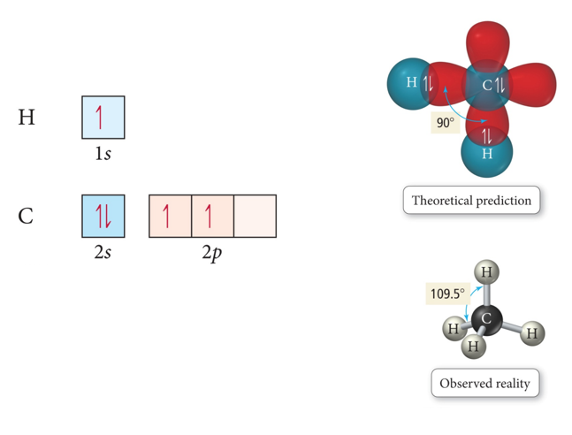
Valence Bond Theory and Hybridization CH4
- One of the issues that arises is that the number of partially filled or empty atomic orbitals did not predict the number of bonds or orientation of bonds.
- C = 2s^2 2px^1 2py^1 2pz^0 would predict two or three bonds that are 90° apart, rather than four bonds that are 109.5° apart.
- To adjust for these inconsistencies, it was postulated
that the valence atomic orbitals could hybridize before
bonding took place.
- One hybridization of C is to mix all the 2s and 2p orbitals to get four orbitals that point at the corners of a tetrahedron.
Hybridization
- Audio 0:02:36.629512
- Some atoms hybridize their orbitals to maximize bonding.
- More bonds = more full orbitals = more stability
- Hybridizing is mixing different types of orbitals in the valence shell to make a new set of degenerate orbitals.
- sp, sp2 , sp3 , sp3d, sp3d2
- Four Hybrid orbitals
- sp, sp2 , sp3 , sp3d, sp3d2
- The same type of atom can have different types of
hybridization.
- C = sp, sp2 , sp3
- 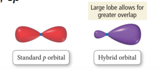
- If we need a trigonal planar
- Hybridize s and sp2
- If we need a trigonal planar
Hybrid Orbitals
- Audio 0:04:49.597515
- The number of standard atomic orbitals combined = the number of hybrid orbitals formed.
- Example for carbon:
- Combining a 2s with a 3p gives four sp3 hybrid orbitals.
- H cannot hybridize.
- Its valence shell only has one orbital.
- 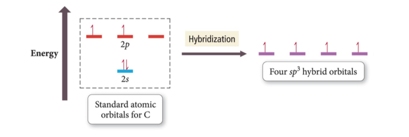
- Audio 0:05:51.042164
- Its valence shell only has one orbital.
- Example for carbon:
- The number and type of standard atomic orbitals combined determines the shape of the hybrid orbitals.
-
The particular kind of hybridization that occurs is the one that yields the lowest overall energy for the molecule.
- Audio 0:06:49.243321
- 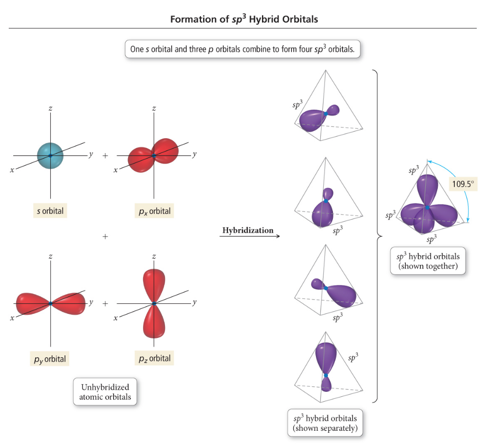
- Take the s and 3 p orbitals and make four sp3 orbitals
- Makes the tetrahedral geometry
- Take the s and 3 p orbitals and make four sp3 orbitals
sp3 Hybridization
- Audio 0:08:30.906596
- Atom with four electron groups around it:
- Tetrahedral geometry
- 109.5° angles between hybrid orbitals
- Atom uses hybrid orbitals for all bonds and lone pairs
-
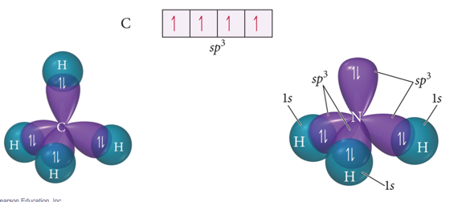
- Audio 0:08:43.856308
Formation of sp Hybrid Orbitals
- 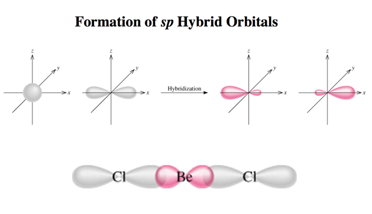
Formation of sp2 Hybrid Orbitals
- Audio 0:09:19.885131
- 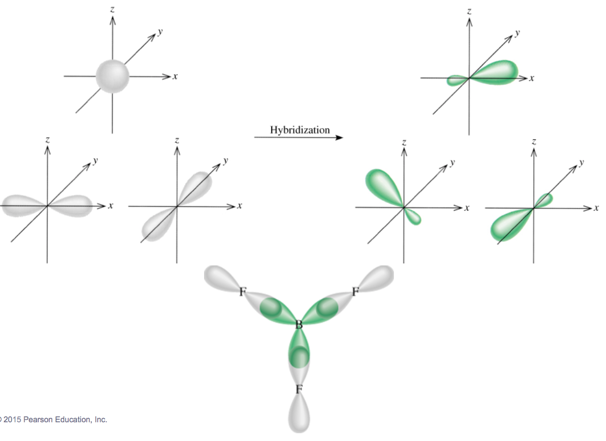
Clicker 1
- Audio 0:09:46.537377
- Give the electron geometry (eg), molecular geometry (mg), and hybridization for H2O
- A) eg = tetrahedral, mg = bent, sp3
- B) eg = trigonal pyramidal, mg = trigonal pyramidal, sp3
- C) eg = tetrahedral, mg = trigonal pyramidal, sp3
- D) eg = bent, mg = bent, sp3
- E) eg = trigonal planar, gm = trigonal planar, sp3
sp3d Hybridized Orbital
- Audio 0:13:35.100695
- Atom with five electron groups around it:
- Trigonal bipyramid electron geometry
- Seesaw, T-shape, linear
- 120° and 90° bond angles
- Use empty d orbitals from valence shell
- d orbitals—used to make π bonds
- 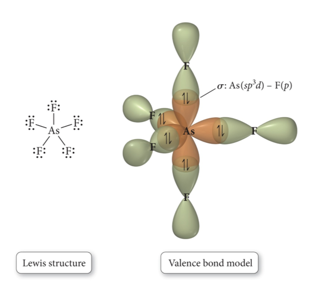
sp3d Hybridized Orbital
- 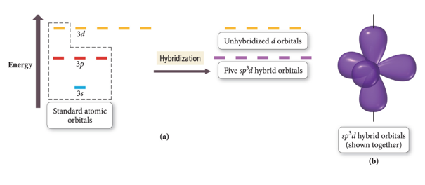
sp3d2
- Atom with six electron groups around it:
- Octahedral electron geometry
- Square pyramid, square planar
- 90° bond angles
- Use empty d orbitals from valence shell to form hybrid
- d orbitals—used to make π bonds
- 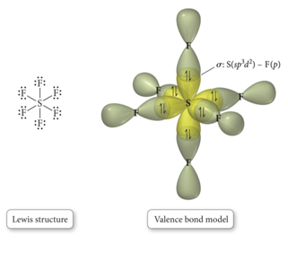
sp3d2
- 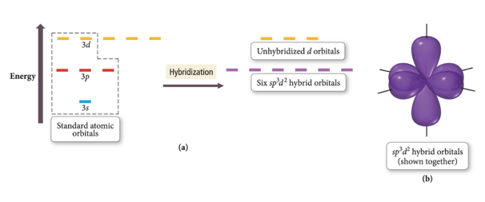
- 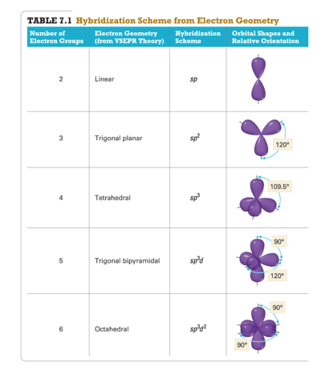
σ and π bonds:
- σ bonds –overlap along bond axis
- 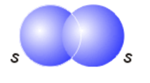
Hybridization: sp2
- Audio 0:19:16.146819
- Atom with three electron groups around it:
- Atom uses hybrid orbitals for σ bonds and lone pairs and uses nonhybridized p orbital for π bond
- 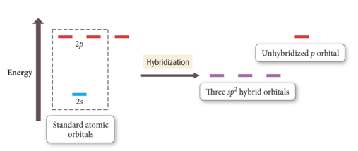
- 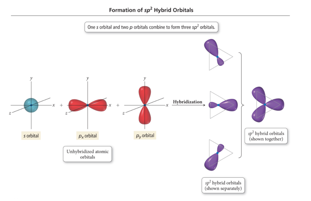
Sigma and Pi Bonding
- Audio 0:20:37.534711
- 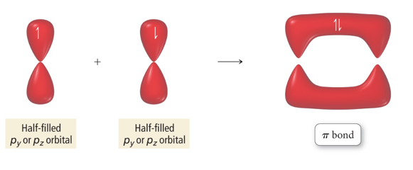
Orbital Diagrams of Bonding: H2CO
- Audio 0:21:03.253240
- 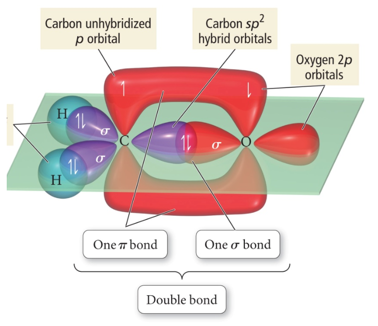
- “Overlap” between a sp2 hybrid orbital on C and s 1s orbital on H gives σ bond.
- “Overlap” between unhybridized p orbitals on C and O gives π bond.
- “Overlap” between C sp2 hybrid orbital and O sp2 gives σ bond
Types of Bonds
- Audio 0:24:50.789254
- A sigma (σ) bond results when the interacting atomic orbitals point
along the axis connecting the two bonding nuclei.
- Either standard atomic orbitals or hybrids
- s to s, p to p, hybrid to hybrid, s to hybrid, etc.
- Either standard atomic orbitals or hybrids
- A pi (π) bond results when the bonding atomic orbitals are parallel to each other and perpendicular to the axis connecting the two bonding nuclei.
- Between unhybridized parallel p orbitals
- The interaction between parallel orbitals is not as strong as between orbitals that point at each other; therefore, σ bonds are stronger than π bonds.
Bond Rotation
- Audio 0:26:21.602225
- Because of the orbitals that form the σ bond point along the internuclear axis, rotation around that bond does not require breaking the interaction between the orbitals.
- But the orbitals that form the π bond interact above and below the internuclear axis, so rotation around the axis requires the breaking of the interaction between the orbitals.
- 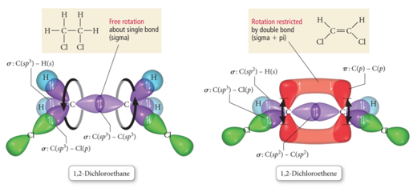
- With a single bond, you have free rotation of the molecule around the bond
- The rotation does not impact the strength of the bond
- With a double bond, you’d have to break the bond to rotate
- It actually freezes the structure of the molecule
- With a single bond, you have free rotation of the molecule around the bond
Cis & Trans Isomers of 1,2-Dichloroethane
- Audio 0:28:53.696722
- 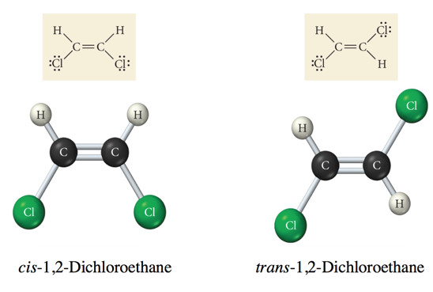
- Same compound, different properties
- Think about trans-fats
- Still fat, but way more harmful
Clicker 2
- Audio 0:32:21.778478
- place the following in order of decreasing dipole moment
- I. cis-CHCl=CHCl II. trans-CHCl=CHCl III. cis-CHF=CHF
- A) III > I > II
- B) II > I > III
- C) I > III > II
- D) II > III > I
- E) I = III > II
sp Hybridization and Triple Bonds
- Audio 0:35:28.142277
- Atom with two electron groups:
- Linear shape
- 180° bond angle
- Atom uses hybrid orbitals for σ bonds or lone pairs and uses nonhybridized p orbitals for π bonds
- 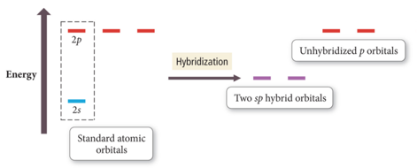
Formation of sp Hybrid Orbital in Ethyne
- Audio 0:36:27.515559
- 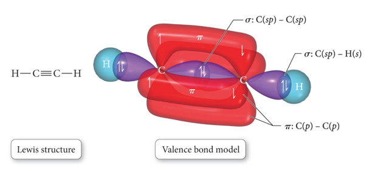
Predicting Hybridization and Bonding Scheme
- Audio 0:36:53.510663
- Start by drawing the Lewis structure.
- Use VSEPR theory to predict the electron group geometry around each central atom.
- Use Table 7.1 to select the hybridization scheme that matches the electron group geometry.
- Sketch the atomic and hybrid orbitals on the atoms in the molecule, showing overlap of the appropriate orbitals.
- Label the bonds as σ or π.
Practice Problem on Hybridization Acetaldehyde: CH3CHO
Problems with Valence Bond (VB) Theory
- Audio 0:43:09.953460
- VB theory predicts many properties better than Lewis
theory.
- Bonding schemes, bond strengths, bond lengths, bond rigidity
- However, there are still many properties of molecules it doesn’t predict perfectly.
- Magnetic behavior of O2
- Resonance hybrids: VB theory presumes the electrons are localized in orbitals on the atoms in the molecule, so doesn’t really address resonance structures
- Aka, we still have shortcomings
| term | definition |
|---|---|
| hybridization | mixing different types of orbitals in the valence shell to make a new set of degenerate orbitals |
| sp2 hybridization | atom with three electron groups around it (uses nonhybridized p orbital for pi bond) |
| sigma (σ) bond | results when the interacting atomic orbitals point along the axis connecting the two bonding nuclei |
| pi bond | results when the bonding atomic orbitals are parallel to each other and perpendicular to the axis connecting the two bonding nuclei |
| sigma bonds are (stronger or weaker?) than pi bonds | stronger |